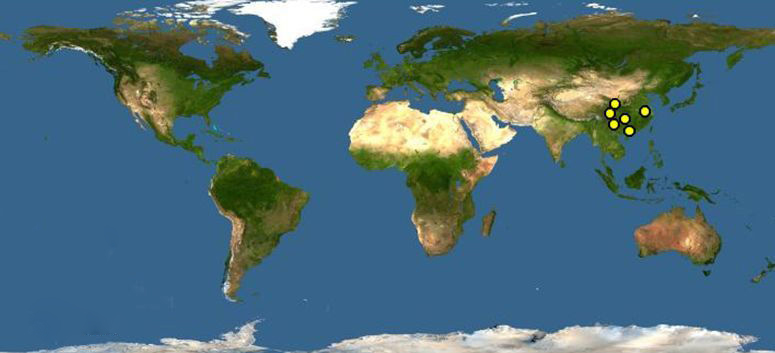

分布于中国甘肃，陕西，四川（地区灭绝：湖北、湖南 ）。[15] 包括秦岭、岷山、邛崃山、大相岭、小相岭和大小凉山等山系。秦岭山系分布于南麓，主要分布的县是佛坪，一般分布的县是洋县，仅有少量分布的县有太白、宁陕周至、留坝、宁强等。岷山系除甘肃文县为一般分布外，其余都分布于四川。在四川主要分布的县有平武青川和北川等三县，一般分布的有九寨沟县、松潘、茂县等县，少量分布的县有安县、绵竹、彭州、什邡和都江堰市。邛崃山系主要分布的县有宝兴、汶川和天全等，一般分布的县有大邑和芦山，仅少量分布的县有邛崃、崇州、康定、泸定等。大小相岭除洪雅和冕宁为一般分布县外，仅有少量分布的县有荥经、石棉、汉源、九龙等。大小凉山除马边、美姑和越西有一定数量外，仅有少量分布的县有甘洛、峨边和雷波等。

制作者:王旭 邮箱：847346005@qq.com 微博联系